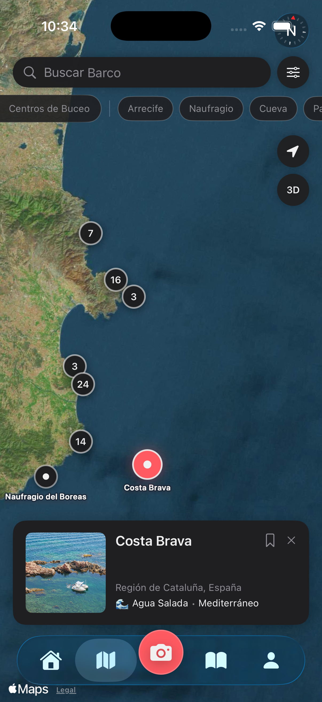
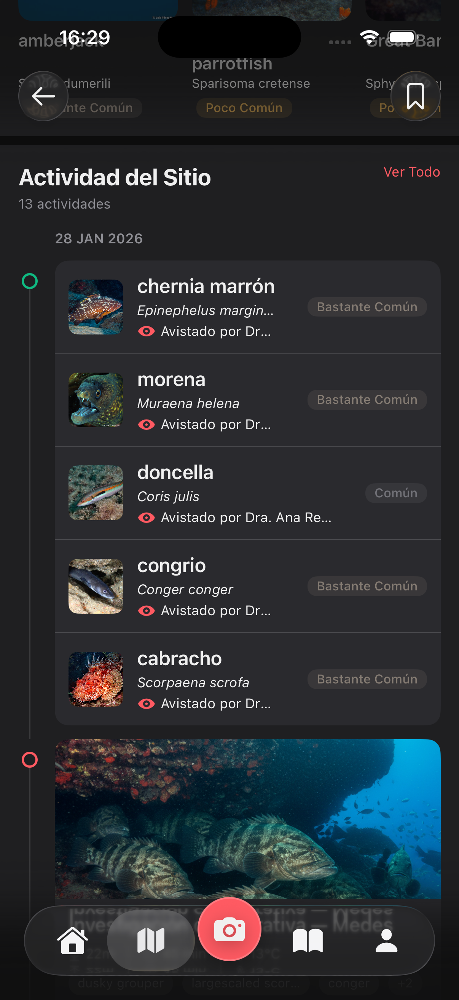

Explore the World Below
Dive sites worth discovering
Browse dive sites with descriptions, conditions, and community activity. See what others have spotted, plan your next dive, and share your own sightings from each location.
100+
Dive Sites
📍
Map View
🤿
Community Sightings
✦
Site Details


